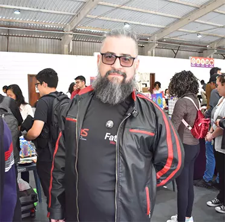

Página sobre Rubens Menezes, o Idealizador
Rubão: A Mente por Trás de Tudo
O homem por trás de todo o evento: Rubens Menezes. Historiador marxista, admirador de Linux e um nerd de carteirinha, Rubens é professor da FATEC São Roque desde sua inauguração em 2012, administrando disciplinas na área da tecnologia e das ciências sociais. Apaixonado por quadrinhos, o tão chamado de ‘Rubão’ pelos alunos buscou levar seu fascínio pelo mundo das histórias e gibis para a cidade de São Roque por meio da criação da FateCON HQ’S em 2022, e neste ano, não poupou esforços para tornar o evento mais grandioso do que antes, com mais artistas e atrações menores.
Segundo o próprio Rubens, desde muito pequeno, gostava de quadrinhos e nunca abandonou esse gosto, o que o levou a entrar de vez na área, escrevendo duas gibis até então. O professor enxerga a cultura como algo fundamental para qualquer sociedade, vendo nos quadrinhos uma manifestação em potencial para levar a cultura a todos os cantos.
Trabalhos e Obras
Como mencionado, Rubens lançou duas histórias em quadrinhos até o presente momento. Ambas trazem uma abordagem profunda a respeito de certas questões sociais, como o consumismo e os problemas na educação brasileira.
‘Os Consumidores Selvagens e a Ascensão dos Palhaços’, lançado em 2019, serve como uma crítica social forte ao modelo consumista, desenhado através de animais e um traço mais infantil.
‘Mexericas’, lançada em 2023, e “quase baseada em fatos reais”, segundo o próprio Rubens. A história aborda uma situação em uma escola estadual em Osasco, aprofundando-se nas diferenças sociais existentes entre os alunos e os problemas na educação brasileira.
Contato
Acesse AQUI